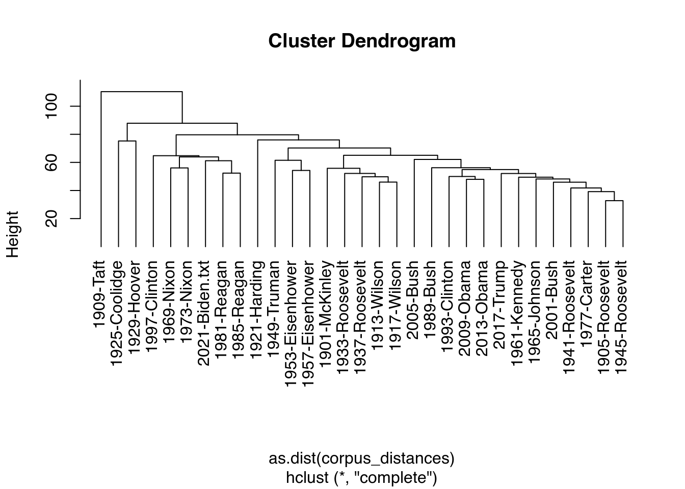

5.4 Text Statistics
Finally, quanteda also allows us to calculate quite some textual statistics. These are all collected in the quanteda.textstats helper package. Here, we will look at several of them, starting with a simple overview of our corpus in the terms of a summary. This tells us the number of characters, sentences, tokens, etc. for each of the texts:
library(quanteda.textstats)
corpus_summary <- textstat_summary(corpus_inaugural)If we want, we can then use this data to make some simple graphs telling us various things about the texts in our corpus. As an example, let’s look at the number of sentences the various presidents put in their speeches:
ggplot(data=corpus_summary, aes(x=document, y=sents, group=1)) +
geom_line()+
geom_point()+
ylab("Number of Characters")+
xlab("President/Year")+
theme_classic()+
theme(axis.text.x = element_text(angle = 90))
Other things we can look at are the readability and lexical diversity of the texts. The former one of these refers to how readable a text is (i.e. how easy or difficult it is to read), while the latter tells us how many different types of words there are in the texts and thus how “diverse” the text is in word choice and use. Given that there are many ways to calculate both metrics, please have a look at the help file to see which one works best for you. Here, we will use the most popular:
corpus_readability <- textstat_readability(corpus_inaugural, measure = c("Flesch.Kincaid", "Dale.Chall.old"))
corpus_lexdiv <- textstat_lexdiv(data_inaugural_tokens, c("CTTR", "TTR", "MATTR"), MATTR_window = 100)As before, we can plot this data in a graph to see how lexical diversity developed over time:
ggplot(data=corpus_lexdiv, aes(x=document, y=CTTR, group=1)) +
geom_line()+
geom_point()+
ylab("Lexical Diversity (CTTR)")+
xlab("President/Year")+
theme_classic()+
theme(axis.text.x = element_text(angle = 90))
Another thing we can do is look at the similarities and distances between documents. With this, we can answer questions such as: how “different” are these documents from each other? And if different (or similar), how different (or similar)? The idea is that the larger the similarity is, the smaller the distance is as well. A good way to understand the idea of similarity is to consider how many operations you need to perform to change one text into the other. The more “replace” options you have to carry out, the more different the text. As for the distances, it is best to consider the texts as having positions on a Cartesian plane (with positions based on their word counts). The distance between these two points (either Euclidean, Manhattan or other) is then the distance between the texts.
Let’s start with a look at these similarities (note again that there are many different methods to calculate this):
corpus_similarties <- textstat_simil(data_inaugural_dfm, method = "correlation", margin = "documents")
corpus_similarties <- as.data.frame(corpus_similarties)A brief look at these results tells us that the 1981 and 1985 Reagan speeches show the highest degree of similarity, while the
1945 Roosevelt and 2017 Trump speeches are the most different. Note that while we look here at the documents, we could also look at individual words (set margin="features). For now, let us look at the distances between the documents, choosing the Euclidean distance between the documents as our metric:
corpus_distances <- textstat_dist(data_inaugural_dfm, margin = "documents", method = "euclidean")
corpus_distances_df <- as.data.frame(corpus_distances)Here, we find the 1905 and 1945 Roosevelt speeches (the two different Roosevelts) to be the closest, and the 1909 Taft and 1997 Clinton speeches to be furthest apart. If we want to, we can even convert this data into a dendrogram. We do this by taking the information on the distances out of the corpus_distances object, make them into a triangular matrix, and plot them:
plot(hclust(as.dist(corpus_distances)), hang = -1)Here, we can see that - amongst others - the 1909 Taft speech is the “farthest” away from all the others. Also, while the 1981 and 1985 Reagan speeches were very close, the 1997 Clinton speech was closer to Nixon’s speeches than his 1993 speech (which was close to the 2009 and 2013 Obama speeches).
Finally, let us look at the entropy of our texts. The entropy of a document measures the “amount” of information each letter of the text produces. To get an idea of what this means, consider the “e” is an often occurring letter in an English text, while “z” is not. Thus, a word with a “z” in it, it more unique and thus likely to carry unique and interesting information. The “higher” the entropy of a text, the less “information” is in it:
corpus_entropy_docs <- textstat_entropy(data_inaugural_dfm, "documents")
corpus_entropy_docs <- as.data.frame(corpus_entropy_docs)As we can see, the Roosevelt speeches had the lowest entropies, while the 1909 Taft and 1925 Coolidge speeches were the highest (in relative terms). While not as common as the other distance metrics, entropy is sometimes used to measure the similarity between texts. Thus, it can be useful if we want to know the importance of certain words. This is because if a certain word is not “important,” we could consider it to be a stop word:
corpus_entropy_feats <- textstat_entropy(data_inaugural_dfm, "features")
corpus_entropy_feats <- as.data.frame(corpus_entropy_feats)
corpus_entropy_feats <- corpus_entropy_feats[order(-corpus_entropy_feats$entropy),]
head(corpus_entropy_feats, 10)## feature entropy
## 164 people 4.766391
## 488 life 4.747627
## 385 nation 4.737440
## 5 great 4.654392
## 114 can 4.651396
## 317 future 4.639222
## 197 world 4.616910
## 212 time 4.616614
## 402 must 4.610073
## 231 god 4.601430Looking at the data, we find that “people,” “life” and “nation” have pretty high entropies. This indicates that the words added little to the information of the documents, and would-be candidates for removal from our corpus.